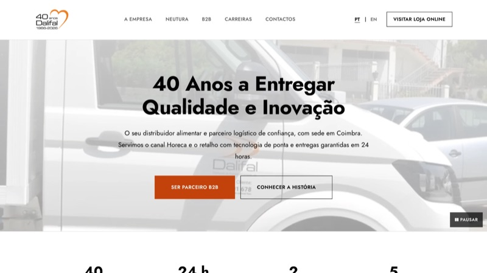

web · ui design · neutura · 2026

web · ui design · dalifal · 2026
editorial · neutura · 2026
branding · vehicle graphics · neutura · 2025
packaging · branding · neutura · 2024
video · social media · university · 2021/22
web · data visualisation · university · 2020/21
video · promotional film · university · 2018/19